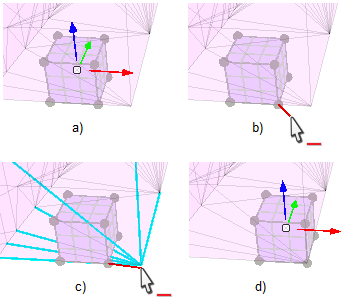
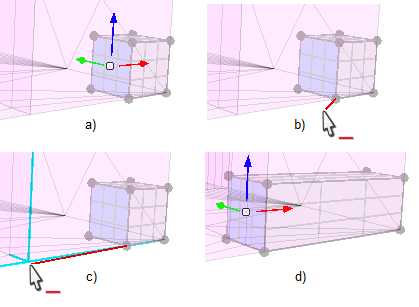
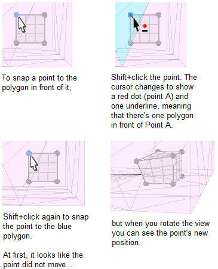
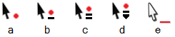
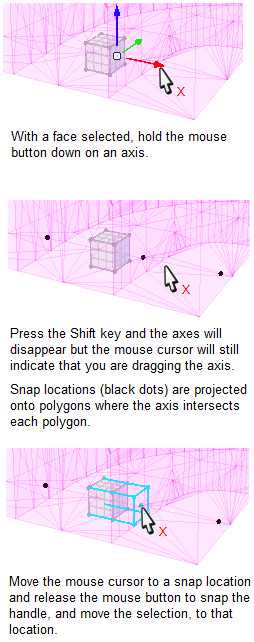
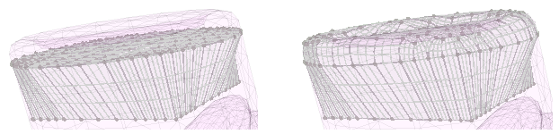

使用几何数据
使用几何数据时，通常需要将其显示为透明。虽然可以将几何体显示为不透明，但这会妨碍许多交互功能。即使几何数据仅包含线条而没有多边形，这一点也同样适用。
点到点捕捉
导入几何数据集（.DXF、.STL 或 Itasca .GEOM 文件）后，您可以使用点到点移动使块体与几何体的特征相吻合。
例如，要将块体捕捉到几何图形的角点，您可以：
- 选中该块体，
- 按住 Shift 单击块体上的某个点（称为点 A），然后
- 按住 Shift 单击图形角点处棱边的交点（称为点 B）。
- 所选块体将按点 A 到点 B 的移动所指定的距离和方向移动。

可以使用相同的技术移动一个或多个选中的面：

可使用点到点捕捉移动任何选中的对象。
点到点捕捉有一种特殊情况：如果在按住 Shift 单击点 A 时没有选中任何对象，则点 A 会自动被选中，并在移动后取消选中。这便于更快地将一系列点捕捉到几何特征上。
当块体位于几何形状内部，而您想向外拉动点以与多边形相接时，可以旋转模型，使您在朝自己的方向拉动该点时，它捕捉到您与该点连线上正对的多边形位置。

体点或控制点可以捕捉到其前方的几何体，但不会穿过块体捕捉到块体后方的几何体。
当您按住 Shift 单击以设置点 A 时，光标会有几种变化，以帮助显示正在发生的情况。下面的前 4 种光标仅在鼠标位于点 A 上且按住 Shift 键时出现。

- 鼠标光标：
- 光标“a”表示点 A（红点）前方没有多边形。
- 光标“b”表示点 A 前方有一个多边形。
- 光标“c”表示点 A 前方有两个多边形。
- 光标“d”表示点 A 前方有两个以上的多边形。
- 光标“e”提醒您（即使未按住 Shift 键）已指定了点 A。
当点 A 前方有多个多边形时，您可以使用鼠标滚轮来选择要捕捉到哪个多边形。鼠标滚轮的作用是剥离多边形的各层，让您可以捕捉到模型内部更深的点、棱边和多边形。鼠标滚轮不会改变光标形状，但会改变被高亮显示的多边形、点或棱边。使用鼠标滚轮的另一种方式是按住 Shift 键再加上方向键上或下来在各几何图层中移动。
一维捕捉
一维（单维）捕捉技术可以与几何数据配合使用。一维捕捉将使所选对象仅沿指定轴移动到可捕捉的位置。这些位置包括几何棱边的交点、投影到多边形上的捕捉目标，以及体点。
捕捉到多边形的示例：

披覆
当您有一个显示某个表面的几何数据文件，并希望块体与该表面贴合时，可以使用 drape 命令。该命令将沿您指定的方向移动体点和控制点，直到它们与几何集中的一个多边形相遇。（几何集必须有多边形，而不仅仅是线条。）在使用 drape 命令之前，最好添加足够的块体和控制点，以获得您想要的分辨率。
示例命令：
building-block point drape direction (0,0,1) range position-z 240 250
沿 x、y 和 z 轴指定的方向决定点将移动的方向。范围（在此情况下为沿 z 轴的坐标）决定将移动哪些点。


使用 drape 命令后，您可以检查结果并注意到某些区域需要更高的分辨率。可以通过拆分块体，或通过向选中的棱边或面添加控制点并沿同一轴沿相反方向再执行 2 次 drape 命令来提高分辨率。请务必使用新的范围坐标来指定要移动的点。
- 要向选定范围内的棱边添加控制点：单击一条棱边，以将棱边设为种子选择类型，然后拖动鼠标扫过一定范围的棱边以将其选中，接着在对象属性控件组中找到“棱边控制点”行。更改“棱边控制点”值，以设置每条选中棱边所使用的控制点数量。
- 对于面也类似：选中一些面，然后使用对象属性控件组中的“面控制点”行。选中“添加控制点”工具（ ）时可以看到面控制点。
）时可以看到面控制点。
注意：如果您计划在模型中使用超过几百个控制点，可能需要将它们作为最后几步之一来添加，因为随着控制点增加，校验过程会大幅变慢。每当控制点或棱边端点移动时都会执行校验。
使用控制面板进行披覆
除了使用命令行之外，您还可以使用对象属性控件组中的披覆控件（Drape controls）。在这种情况下，您可以选中一条棱边以指示进行披覆的方向，并单击控件组中的按钮将该棱边的矢量复制到披覆控件。然后选中要移动的点、棱边或面，并单击其中一个披覆按钮，以沿您选择的方向移动点。
披覆到块体
块体不会披覆到块体，但您可以将块体复制为几何数据，然后以这种方式披覆到它们上。有关更多详细信息，请参阅本节（this section）。
| 这些内容对您有帮助吗？… 版权与免责声明 | FLAC3D © 2019, Itasca | 原文更新于 2020 年 10 月 8 日 |